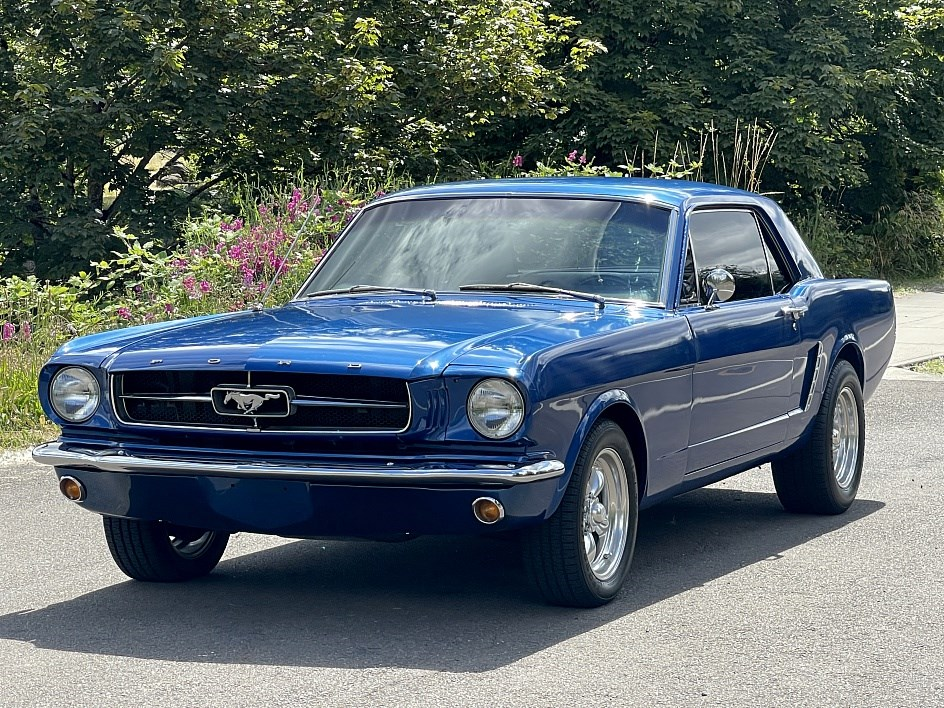
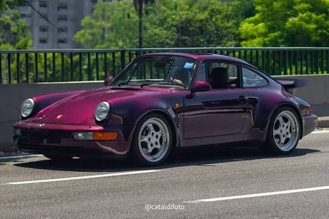
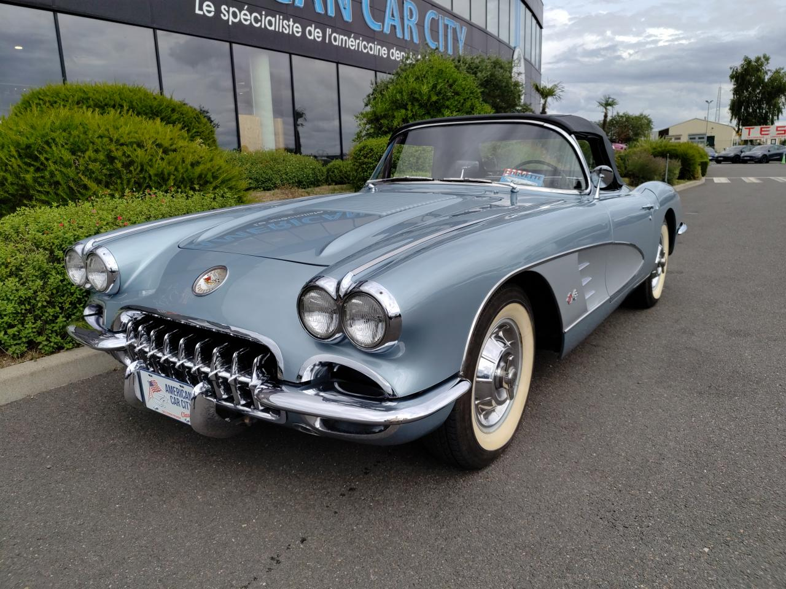
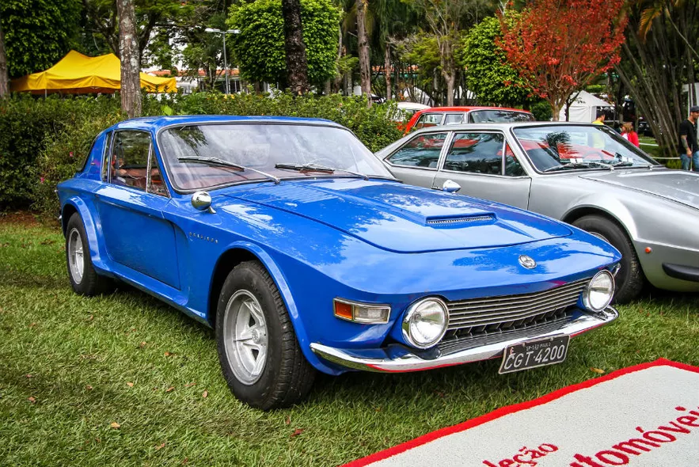
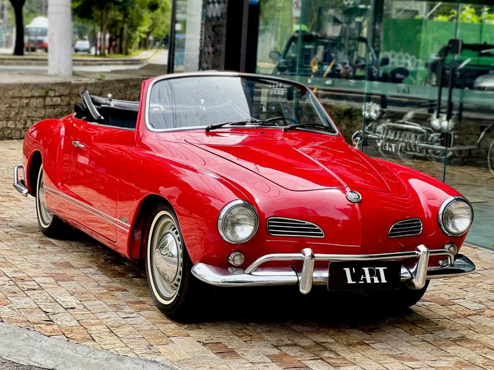

Ford Mustang (1964)

Visão geral do modelo
Ícone americano com estilo musculoso e forte presença no segmento de coupês esportivos.
Características principais
- Design icônico e atemporal
- Performance esportiva sólida
- Boa presença de pista
- Referência entre os clássicos
Chevrolet Opala SS (1971)

Visão geral do modelo
Versão esportiva do Opala com visual imponente e desempenho superior para a época.
Características principais
- Visual agressivo e imponente
- Motor robusto e potente
- Acabamento esportivo
- Herança clássica brasileira
Porsche 911 (1964)

Visão geral do modelo
Modelo alemão de alto desempenho com desenho icônico e excelente dirigibilidade.
Características principais
- Dirigibilidade excepcional
- Acabamento premium
- Linhas atemporais
- Reputação esportiva mundial
Chevrolet Corvette (1958)

Visão geral do modelo
Um dos primeiros esportivos americanos com estilo distinto e forte apelo histórico.
Características principais
- Visual elegante e exclusivo
- Patrimônio americano
- Construção robusta
- Valor de colecionador
Ford Maverick GT (1973)

Visão geral do modelo
Modelo norte-americano voltado para quem buscava desempenho e visual forte.
Características principais
- Potência elevada
- Design muscular
- Desempenho robusto
- Apelo clássico americano
Jaguar E-Type (1961)
Visão geral do modelo
Elegância britânica com desempenho refinado e linhas extremamente elegantes.
Características principais
- Design premiado
- Performance refinada
- Acabamento de luxo
- Alto padrão entre clássicos
Brasinca Uirapuru (1964)

Visão geral do modelo
Projeto brasileiro de grande personalidade, com cara de esportivo e forte identidade nacional.
Características principais
- Traço esportivo único
- Produção nacional limitada
- Design marcante
- Valor de colecionador
Dodge Charger R/T (1971)

Visão geral do modelo
Muscle car americano com visual agressivo e alto desempenho.
Características principais
- Potência extrema
- Design musculoso
- Som marcante
- Clássico de colecionador
Chevrolet Chevette (1973)

Visão geral do modelo
Modelo compacto e prático, ideal para uso urbano e circulação diária.
Características principais
- Economia e manutenção simples
- Compacto e fácil de manobrar
- Uso urbano eficiente
- Popular na época
Volkswagen Karmann Ghia (1962)

Visão geral do modelo
Modelo elegante e de personalidade única, muito admirado por colecionadores.
Características principais
- Design europeu refinado
- Linhas suaves e elegantes
- Peça de coleção
- Apelo histórico